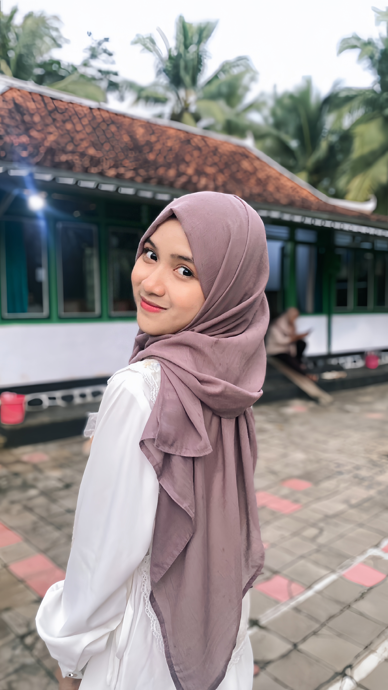
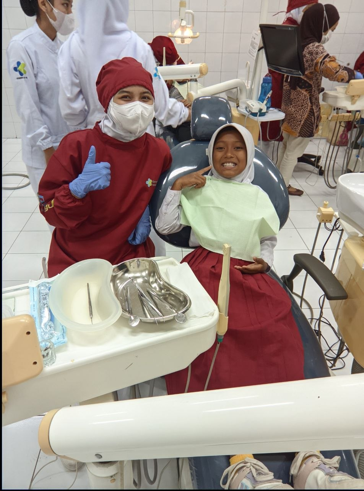
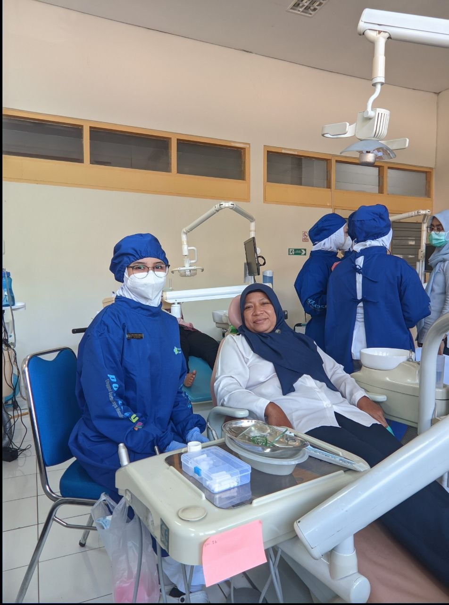
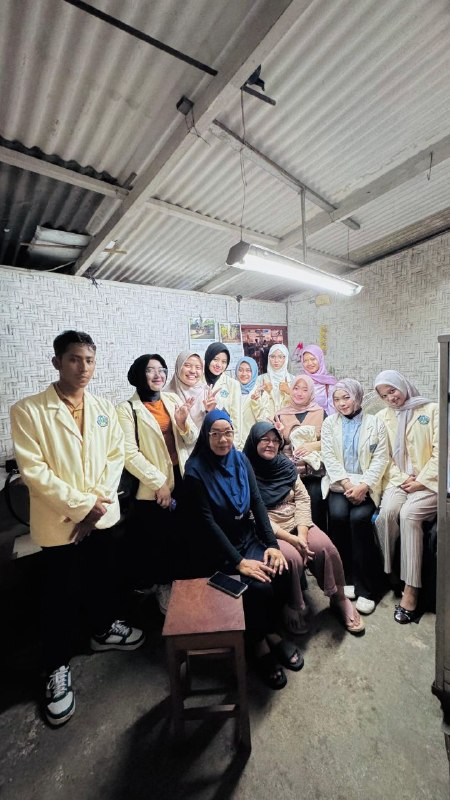
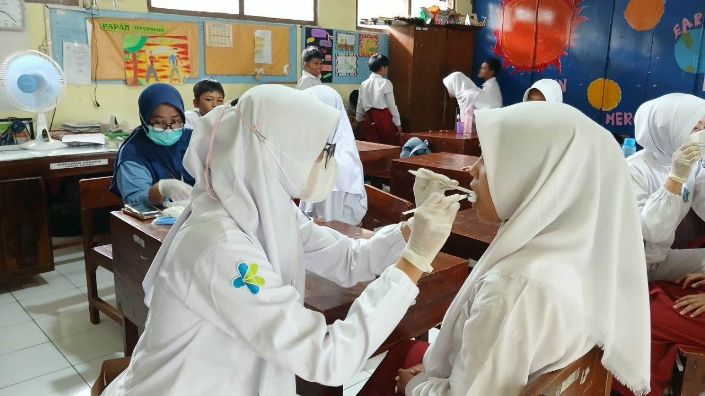
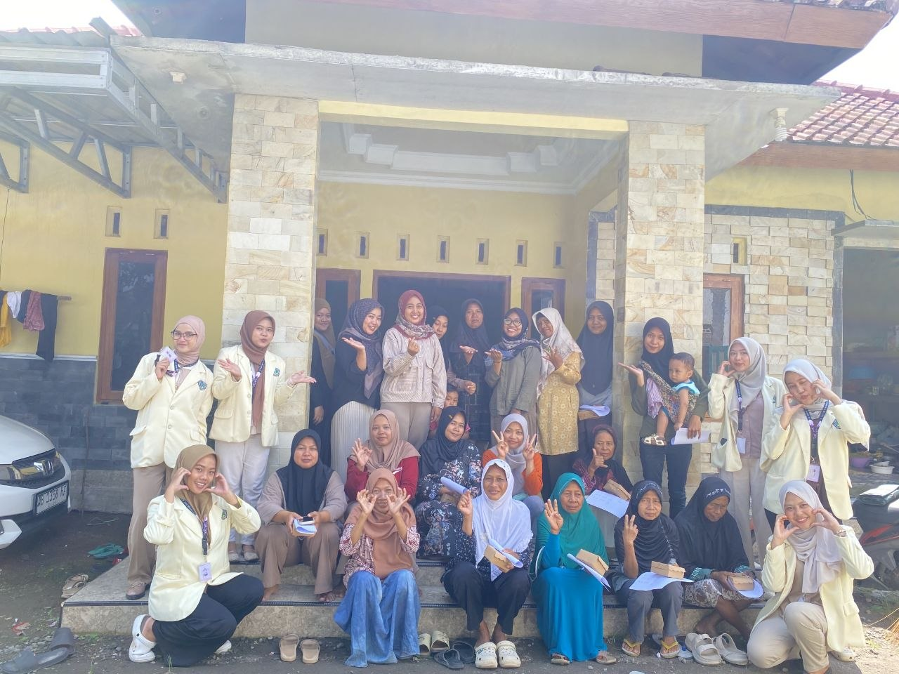
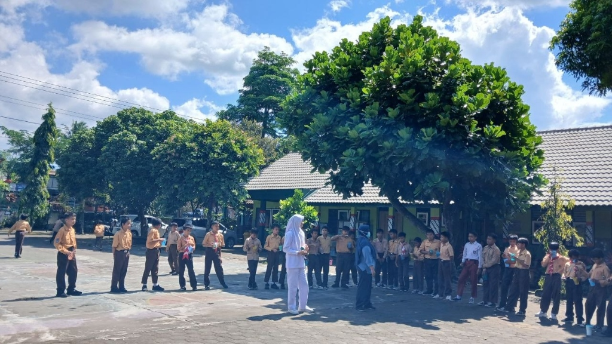
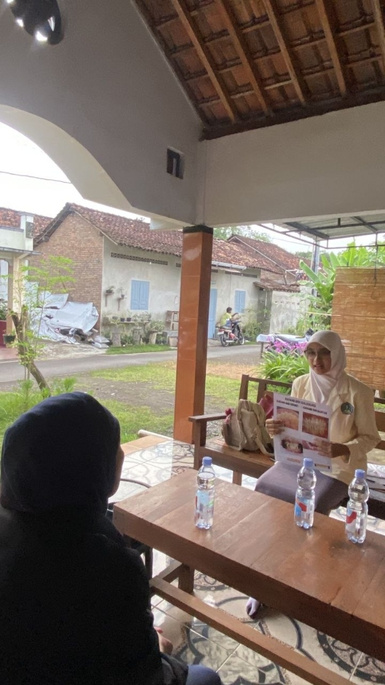
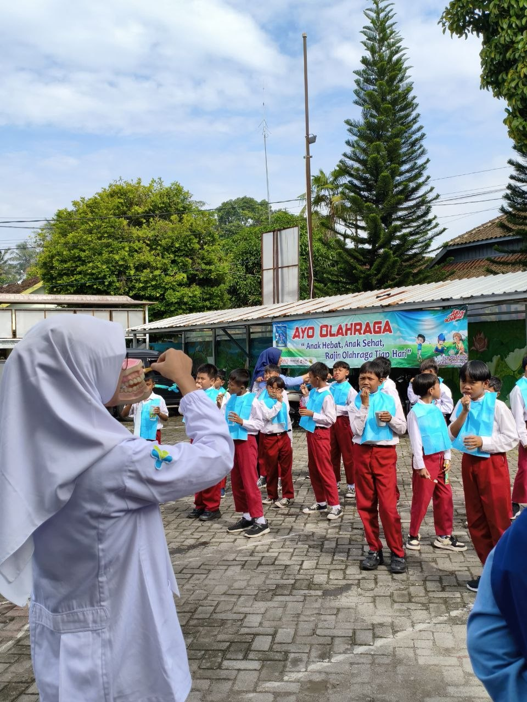

Aulia Hasna Fadhilah
"Mahasiswi D3 Kesehatan Gigi yang memiliki ketertarikan pada edukasi kesehatan gigi dan mulut, pelayanan kesehatan masyarakat, serta pengembangan keterampilan profesional untuk meningkatkan kualitas kesehatan gigi masyarakat."
About Me
Data Diri
Tujuan Karier
"Menjadi tenaga kesehatan gigi yang profesional, kompeten, dan berdedikasi dalam memberikan pelayanan kesehatan gigi yang berkualitas serta berkontribusi dalam meningkatkan kesadaran masyarakat akan pentingnya menjaga kesehatan gigi dan mulut."
Bidang Minat & Fokus
Skills & Keterampilan
Hard Skills
Edukasi Kesehatan Gigi & Mulut
Memberikan pemahaman pencegahan karies dan perawatan gigi mandiri.
Pemeriksaan Kebersihan Gigi Sederhana
Melakukan penilaian debris indeks, kalkulus indeks, dan kebersihan umum.
Pencatatan Rekam Medis Gigi
Mengisi odontogram, anamnesis, dan data klinis secara sistematis.
Sterilisasi Alat Kesehatan
Prosedur dekontaminasi dan sterilisasi alat medis autoklaf standar klinis.
Microsoft Word
Penyusunan laporan klinis, proposal, makalah, dan administrasi kesehatan.
Desain Grafis
Pembuatan poster digital, brosur edukasi, infografis promkes via Canva.
Soft Skills
Komunikasi
Komunikasi terapeutik interpersonal dengan pasien dewasa maupun anak-anak.
Kerja Sama Tim
Kolaborasi kolaboratif lintas sektor pada pengabdian masyarakat & klinik.
Public Speaking
Penyampaian materi secara lugas dan interaktif di depan umum/sekolah.
Kepemimpinan
Mengarahkan jalannya program kerja bidang kepemudaan & keagamaan.
Time Management
Menyeimbangkan kegiatan akademik klinis dengan organisasi kemasyarakatan.
Problem Solving
Mengatasi hambatan lapangan saat penyuluhan atau penanganan pasien.
Experiences
Organizational Experience
Sie IMTAK (Iman & Taqwa)
Mengoordinasikan kegiatan keagamaan, mempererat toleransi, serta menyusun program pembinaan akhlak siswa di lingkungan sekolah.
PDD & Perlengkapan
Bertanggung jawab dalam Publikasi, Dokumentasi, dan Dekorasi acara kepramukaan serta mempersiapkan kebutuhan logistik dan peralatan kegiatan fisik.
Publikasi, Dokumentasi, & Dekorasi (PDD)
Membuat media informasi dakwah kreatif digital, mendokumentasikan kegiatan kajian rutin, dan mendekorasi ruang ibadah untuk kegiatan besar keagamaan.
Bendahara (Treasurer)
Mengelola arus kas keuangan organisasi kepemudaan desa, menyusun laporan pertanggungjawaban bulanan, serta menganggarkan dana kegiatan sosial kemasyarakatan.
Practical Experience & Activities
Instansi Penempatan:
- Rumah Sakit Nyi Ageng Serang
- Puskesmas Tempel I
Menjalankan asuhan keperawatan gigi, asisten dental dokter gigi, sterilisasi alat instrumen, dan edukasi langsung kepada pasien klinik.
Kolaborasi Multidisiplin
Berkolaborasi secara terpadu bersama mahasiswa dari berbagai profesi kesehatan (Kebidanan, Keperawatan, Gizi, dll.) dalam merumuskan pemecahan masalah kesehatan masyarakat secara holistik.
SD Kanisius Pugeran
Melaksanakan aksi nyata penyuluhan promotif-preventif cara menggosok gigi dengan baik dan benar, pemilihan makanan sehat ramah gigi, serta pemeriksaan debris indeks anak sekolah dasar.
My Portfolio








Contact Me
Mari Terhubung
Silakan hubungi saya melalui akun Instagram resmi di bawah ini untuk konsultasi, kerja sama, atau informasi lebih lanjut.